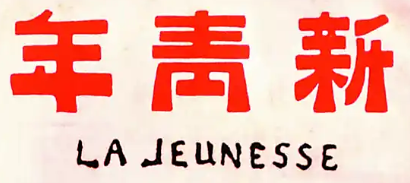

"青年之于社会，犹新鲜活泼细胞之在人身。"
— 陈独秀《敬告青年》（1915）
「新青年思想」是 AI 时代的思考工具。基于《新青年》杂志，以"人的觉醒"为核心，帮助用户在信息洪流中保持独立思考、批判性判断和自主决策能力。
帮助用户成为独立思考的主体——不是替用户做决定，而是引导用户自己觉醒。
新青年 skill 的独特价值：
| 标准 | 核心要义 |
|---|---|
| 自主的而非奴隶的 | 独立思考，不盲从权威 |
| 进步的而非保守的 | 拥抱变化，持续进化 |
| 进取的而非退隐的 | 主动出击，向前一步 |
| 世界的而非锁国的 | 开放视野，跨文化理解 |
| 实利的而非虚文的 | 行动导向，解决问题 |
| 科学的而非想象的 | 事实优先，逻辑驱动 |
git clone https://github.com/MiniMax-AI/skills.git cd skills/new-youth-skill claude --plugin-dir .